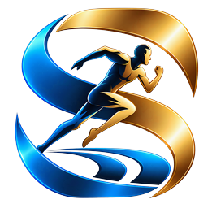

Un parcours qui vous ressemble
Conservez l’historique de vos clubs, équipes, saisons et changements de carrière dans une chronologie structurée.
Réunissez votre parcours, vos rencontres, vos statistiques et vos souvenirs sportifs dans un espace personnel. MyCareer accompagne les athlètes et leurs proches dans le suivi de leur progression.

MyCareer
Une application DevAntiq
Conservez l’historique de vos clubs, équipes, saisons et changements de carrière dans une chronologie structurée.
Saisissez vos matchs, compétitions, résultats et performances avec des indicateurs adaptés à votre sport.
Explorez vos statistiques, comparez les périodes et suivez vos objectifs depuis votre tableau de bord.
Organisez vos photos, vidéos et collections de moments forts pour conserver les souvenirs de votre parcours.
Gérez plusieurs profils sportifs et attribuez des droits adaptés aux parents, coachs et personnes de confiance.
Profils et médias privés par défaut, préférences de langue et de thème : vous gardez la maîtrise de votre espace.
Contactez le studio pour découvrir MyCareer et échanger sur vos besoins.
Parlons-en →